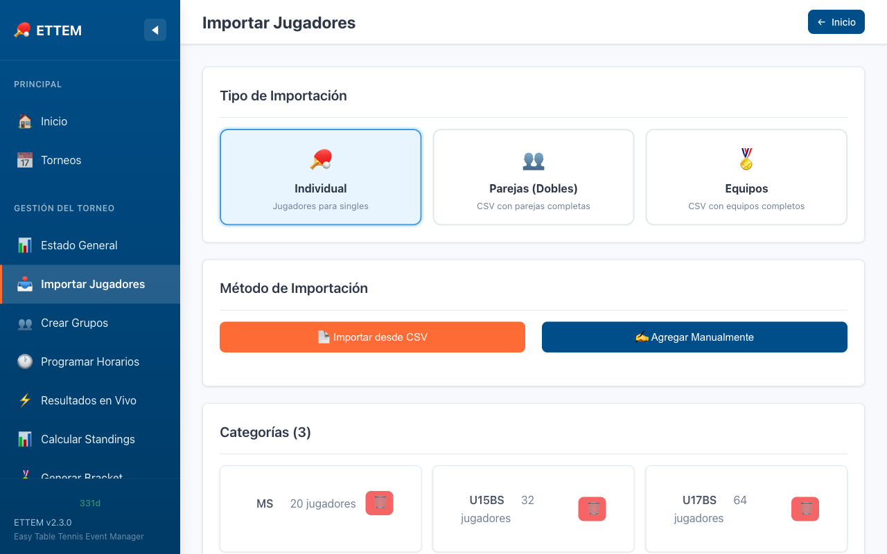

Importar Jugadores
Cómo agregar jugadores al torneo desde un archivo CSV o manualmente.
Opción 1: Importar desde CSV
La forma más rápida de cargar jugadores es mediante un archivo CSV. ETTEM procesa el archivo
y asigna automáticamente cada jugador a su categoría según la columna categoria.

Vista de importación de jugadores: selección de archivo CSV y previsualización.
Pasos para importar
- Desde el dashboard, haz clic en la categoría deseada o ve a Admin → Importar Jugadores.
- Haz clic en Seleccionar archivo CSV y elige tu archivo.
- Revisa la previsualización de los datos en la tabla.
- Haz clic en Importar para confirmar.
Nota
Si el archivo contiene jugadores de varias categorías (ej: U13BS y U15GS en el mismo CSV),
ETTEM los separará automáticamente según el valor de la columna
categoria.
Las categorías deben existir previamente en el torneo.
Formato del Archivo CSV
El archivo debe tener las siguientes columnas en la primera fila (encabezados):
| Columna | Descripción | Ejemplo | Requerido |
|---|---|---|---|
id |
Identificador único del jugador dentro de su categoría (no global) | 1 |
Sí |
nombre |
Nombre del jugador | Juan |
Sí |
apellido |
Apellido del jugador | Pérez |
Sí |
genero |
Género: M (masculino) o F (femenino) |
M |
Sí |
pais_cd |
Código ISO-3 del país (3 letras mayúsculas) | ESP |
Sí |
ranking_pts |
Puntos de ranking. Usar 0 si el jugador no tiene ranking |
1200 |
Sí |
categoria |
Código de categoría ITTF (debe coincidir con una categoría existente) | U15BS |
Sí |
Tip
El campo
id es el número de inscripción del jugador dentro de su
categoría, no un identificador global. Dos jugadores en categorías distintas
pueden tener el mismo id sin conflicto.
Ejemplo de Archivo CSV
A continuación un ejemplo de archivo con jugadores de dos categorías:
id,nombre,apellido,genero,pais_cd,ranking_pts,categoria
1,Juan,Perez,M,ESP,1200,U15BS
2,Pedro,Lopez,M,MEX,980,U15BS
3,Carlos,Morales,M,ARG,0,U15BS
4,Luis,Romero,M,COL,750,U15BS
1,Maria,Garcia,F,ESP,1150,U15GS
2,Ana,Martinez,F,MEX,890,U15GS
3,Sofia,Hernandez,F,ARG,0,U15GS
Códigos de país
Usa siempre códigos ISO-3166-1 alpha-3 de 3 letras:
ESP, MEX,
ARG, COL, BRA, PER, CHI,
URU, PAR, BOL, etc. Un código incorrecto
mostrará una bandera genérica.
Opción 2: Agregar Jugador Manualmente
Si necesitas agregar jugadores uno por uno, usa el formulario manual disponible en la página de cada categoría:
- Ve al dashboard y haz clic en la categoría.
- Haz clic en Agregar Jugador.
- Completa los campos: nombre, apellido, género, país y puntos de ranking.
- Haz clic en Guardar.
Tip
El formulario manual es ideal para agregar jugadores de última hora el día del torneo,
sin necesidad de modificar el CSV original.
Editar y Eliminar Jugadores
Desde la lista de jugadores de cada categoría puedes:
- Editar — Modificar nombre, país o ranking haciendo clic en el ícono de lápiz.
- Eliminar — Quitar un jugador antes de que se creen los grupos.
Atención
Una vez que se crean los grupos, no es posible eliminar jugadores de la categoría. Si
necesitas hacer cambios, deberás borrar los grupos primero.